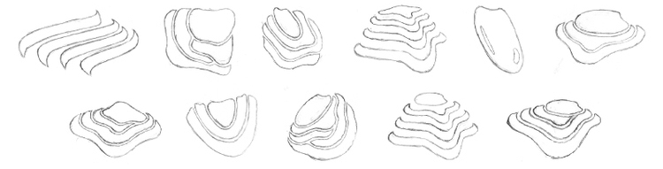
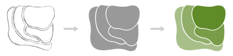
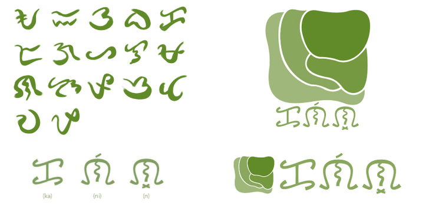
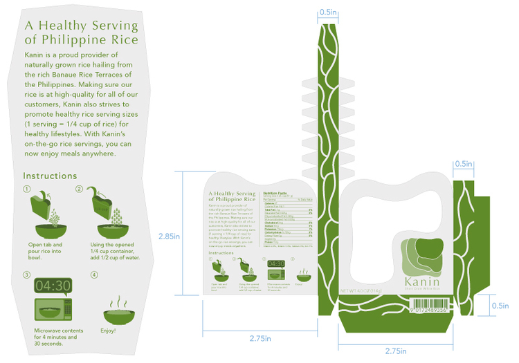

KANIN RICE
Identity, Branding, & Package Design
After conceptualizing a single-serving white rice product, this project called for a graphic identity and branding to bring "Kanin Rice" to life.
The challenging part of this project was to draw each element of the graphic identity around the concept of biomimicry. Since Kanin Rice is a product from the Philippines, the Philippine Rice Terraces became the main inspiration for all visual aspects.
 The logo mimics the tiers of rice terraces.
Kanin's graphic standard
Kanin's Business System
I originally conceptualized Kanin Rice to be a proud product of the Philippines, so developing an alternative logo that showcased the wordmark in the Philippine script called Baybayin to promote the product's cultural significance.
Philippine's baybayin script within Kanin's alternate logo.
The idea of the rice terrace tiers was carried onto the form of the three-dimensional package. The packaging for this product had to be big enough to contain a healthy-sized rice serving of 1/4 cup.
The packaging would be printed on compostable bagasse paper, a waterproof lining of sugar cane lignin on the inside, and a semi-transparent rice paper for the package's window.
While integrating the element of biomimicry into the graphic identity and packaging was a fun challenge, I learned that taking on a holistic view of the product conceptualization (such as cultural significance, sustainability, and healthier eating) can drive the design even further.
Full process book here: Kanin Rice Process Book